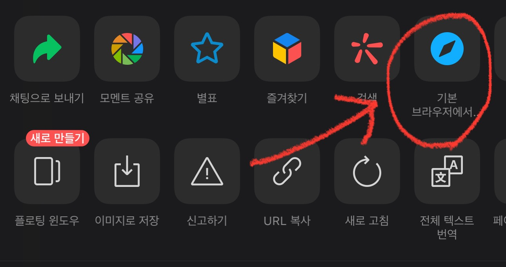

그리고 '기본 브라우저에서 열기' 선택!

속도 저하 경고
위챗에서 직접 열기를 하면 앱 구동 속도가 현저히 느려지거나 악보가 정상적으로 보이지 않는 현상이 발생할 수 있습니다. 쾌적한 사용을 위해 가급적 기본 브라우저(크롬, 사파리 등)를 이용해 주세요.
속도가 좀 느려지더라도 위챗에서 열기를 원하시면
아래 버튼을 눌러주세요.
AI가 새로운 해설을 작성하고 있습니다...
최초 작성 시 10~15초 소요되며, 이후에는 즉시 표시됩니다.
한번 입력해두면 계속 유지됩니다.